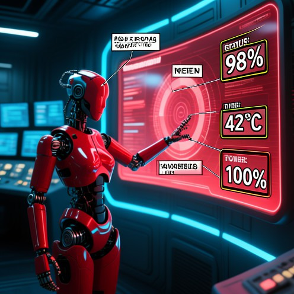
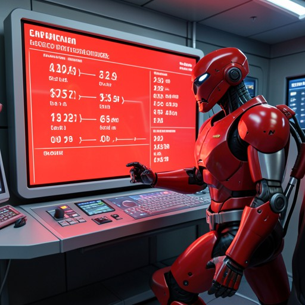

系统A

工具链：Grounding -> SAM -> Extract -> ImageEdit -> OCR -> ImageEdit
在应急控制室场景 img_1 中，比较前景机器人和背景屏幕的颜色。如果机器人颜色更鲜艳，就把屏幕颜色调整到与机器人匹配。然后聚焦机器人与屏幕之间的交互，在屏幕上添加英文数字注释，用来表示正在显示的技术数据。
工具链：Grounding -> SAM -> Extract -> ImageEdit -> OCR -> ImageEdit

工具链：ImageEdit -> ImageEdit

工具链：ImageGeneration
对系统A、系统B、系统C分别填写：
结果是否一致：0-10 分；过程是否合理：0-10 分；0=完全不符合/完全不合理，10=完全符合/非常合理。另填写问题类型与备注。